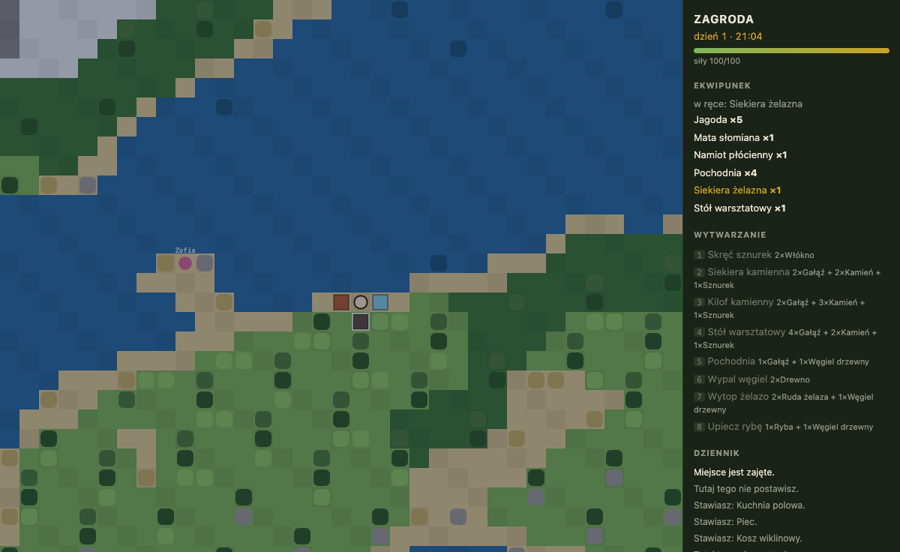
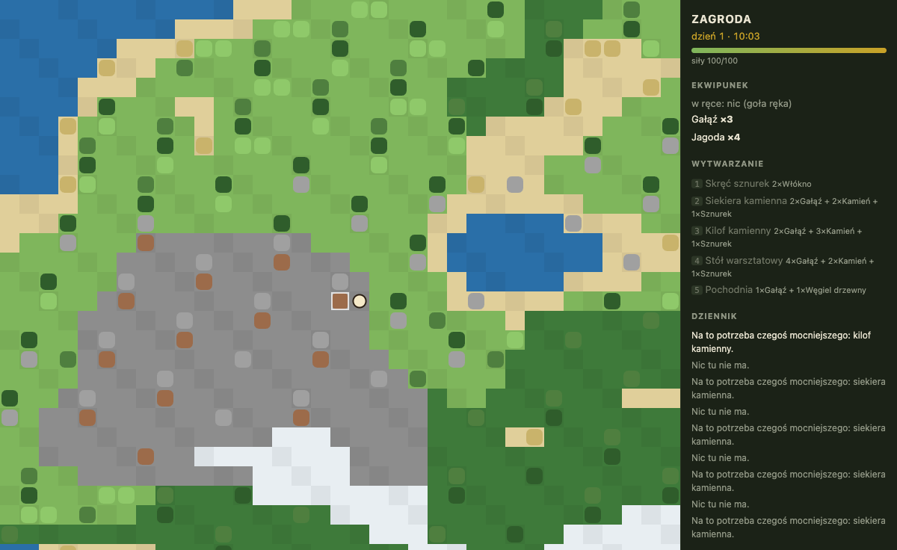
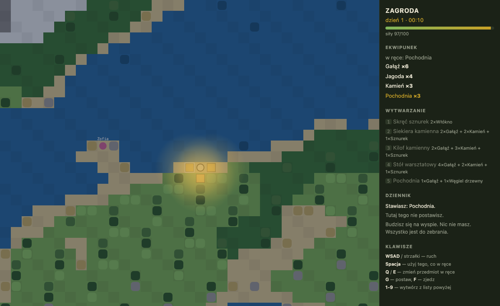

dziennik projektu · 27 października 2026
Gra w przeglądarce, którą rozwija Bielik — polski model językowy działający lokalnie. Opisujesz zmianę po polsku; system ją klasyfikuje, wprowadza, testuje i albo scala, albo porzuca razem z gałęzią.

main
automatycznie. Lista wytwarzania urosła z pięciu pozycji do ośmiu, bo piec
i kuchnia stanęły w zasięgu. O tej porze zbieranie kosztuje podwójnie — to już
patch Qwena.
założenie
Bielik to model ogólnego przeznaczenia, nie koderski. W tool-callingu i generowaniu diffów zawodzi często, nie sporadycznie. Cała architektura jest odpowiedzią właśnie na to: orkiestracja jest deterministyczna, a model dostaje wąskie, walidowalne zadania.
Z tego wynikają trzy rzeczy, które wyglądają na nadmiarowe, a nie są. Treść gry to dane w JSON — model emituje deklaratywne operacje, a pliki zapisuje zwykły kod. Schemat tych operacji jest budowany na żądanie i możliwie wąski: gałęzie kasowania i łatania pojawiają się w nim dopiero, gdy klasyfikacja wyraźnie ich zażąda. A bramka jakości, schematy i testy są dla agenta niezapisywalne, bo najprostsza droga do zielonego światła ma prowadzić przez naprawienie kodu, nigdy przez rozmontowanie tego, co sprawdza.
pętla
main bez człowieka. Po lewej model
emituje operacje, a zapisuje je kod.
co naprawdę zrobiły modele
„dodaj kosz wiklinowy: pojemny schowek pleciony z trzciny, mieści więcej niż zwykła skrzynia”
Bielik dodał przedmiot, strukturę o pojemności 30 (skrzynia ma 20 — wymaganie spełnione) i recepturę z dziesięciu włókien. Druga runda, po tym jak bramka odrzuciła pierwszą z komunikatem o trzcinie.
+ items kosz_wiklinowy
+ structures kosz_wiklinowy storage: 30
+ recipes r_kosz_wiklinowy
10×wlokno + 2×sznurek
„zbieranie surowców w nocy ma kosztować dwa razy więcej sił niż w dzień”
Qwen trafił w isNight() zamiast wymyślać własny próg — bo skill
mu to nakazał. Sprawdzone empirycznie: w południe 1 jednostka sił,
o północy 2.
function harvest(…) {
if (!spend(state, reg,
isNight(state, reg) ? 2 : 1
)) return;
liczby
jedenaście przebiegów, jedenaście różnych trybów awarii
Za każdym razem lekarstwem okazywało się usunięcie danej możliwości ze zbioru dopuszczalnych wyjść modelu — a nie dopisanie kolejnej reguły do promptu.
| # | Co robił model | Czym naprawione |
|---|---|---|
| 1 | Skasował skrzynię, choć prosiłem o kosz | Operacja kasowania zniknęła ze schematu |
| 2 | Łatał identyfikator, którego nie ma | Operacje łatania zniknęły ze schematu |
| 3 | Brał samo items dla rzeczy wymagającej trzech kolekcji |
Kolekcje dopełniane o zależności przed budową schematu |
| 4 | Mielił kwadransami pod gramatyką | Rozbicie na wywołania per kolekcja — koszt rośnie superliniowo z rozmiarem gramatyki |
| 5 | Podawał trzcina jako wsad receptury |
Komunikat błędu mówi, czym ten identyfikator naprawdę jest |
| 6 | Zrobił kosz będący naraz schowkiem, narzędziem i jedzeniem | Kontrola spójności ról w walidatorze |
| 7 | Dorzucił przedmiot, który do niczego nie służy | Kontrola przedmiotów bez zastosowania |
| 8 | Przepisywał cały plik, żeby zmienić trzy linijki | Protokół podmian zamiast pełnych plików |
| 9 | Ignorował wymyślony przeze mnie format znaczników | Standard SEARCH/REPLACE, który modele znają z treningu |
| 10 | Mylił wcięcie o jedną spację i patch przepadał | Dopasowanie tolerancyjne, ale wciąż jednoznaczne |
| 11 | Nazwał nocą popołudnie — i bramka to przepuściła | isNight() w rdzeniu; skill wskazuje helper zamiast tłumaczyć liczby |
| → | Trzy ostatnie przebiegi: dane, kod, kod | Wszystkie zielone |
reguła
…sprawdź najpierw, czy nie każesz mu zgadywać czegoś, co powinno być zapisane. Granica nocy to decyzja gry, więc trafiła do rdzenia. Format patcha to standard, który model zna, a nie mój wynalazek. Co jest przedmiotem, a co surowcem — do komunikatu błędu. Które pola zostawić pustymi — do schematu, nie do promptu.
Najczystszym wyrazem tej reguły są skille: pięć plików, w których zapisałem to, czego model nie ma skąd wiedzieć — gdzie w kodzie leży punkt zaczepienia, jakich inwariantów nie wolno złamać i które pliki rdzenia w ogóle wysyłać. Dopisanie kolejnego kosztuje pięć minut i zero par treningowych. To jest główna droga rozwoju tego systemu, nie dostrajanie modelu.
dwa zrzuty dla porządku


co zostaje otwarte
Prompt klasyfikacji ma dziś 2 435 tokenów i zawiera pełny stan gry. Przy kilkuset przedmiotach trzeba będzie wysyłać wycinek, a nie całość.
Bez klucza pętla jest w pełni lokalna, ale gdy Bielik nie trafi po trzech rundach, zmiana przepada zamiast trafić do mocniejszego modelu. Włącza się bez zmiany linijki kodu.
„Mieści więcej niż skrzynia” akurat wyszło, ale walidator tego nie weryfikował — potwierdził tylko, że schowek istnieje. Takie rzeczy wyłapie wyłącznie przegląd człowieka.